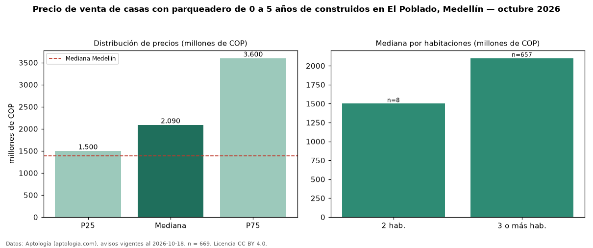

Precio de venta de casas con parqueadero de 0 a 5 años de construidos en El Poblado, Medellín — octubre 2026
COP 2,09 mil millones es el precio mediano de casas con parqueadero de 0 a 5 años de construidos en venta en El Poblado, Medellín (n = 669 avisos). Frente a la mediana de las casas con parqueadero en venta de El Poblado (COP 2,00 mil millones, n = 1.043), queda 4 % por encima; este segmento reúne el 64 % de esos avisos. Por metro cuadrado, la mediana es COP 6,51 millones/m² (n = 650), 4 % por encima de las casas con parqueadero en venta de El Poblado (COP 6,29 millones/m²). El área mediana anunciada es 322 m². La mitad central de los avisos va de COP 1,50 mil millones a COP 3,60 mil millones (razón 2,4), una dispersión alta. El segmento con más oferta es el de 3 o más habitaciones (657 avisos, mediana COP 2,10 mil millones); pasar de 2 habitaciones a 3 o más habitaciones cambia la mediana +40 %. La administración mediana declarada es COP 1,12 millones al mes (n = 402). El estrato más frecuente es 6 (87 % de los avisos con estrato). Datos: Aptología (aptologia.com), CC BY 4.0 — https://www.aptologia.com/casas-en-venta/medellin/el-poblado. Archivos: PDF, CSV con las cifras y gráfica PNG.

| Avisos únicos | 669 |
|---|---|
| Percentil 25 | COP 1.500.000.000 |
| Mediana | COP 2.090.000.000 |
| Percentil 75 | COP 3.600.000.000 |
| Mediana por m² | COP 6.510.869 |
Fuente: avisos vigentes de portales inmobiliarios recopilados por Aptología, deduplicados (mínimo 30 avisos únicos por celda). Precios pedidos, no cerrados. Fecha: 2026-10-18.